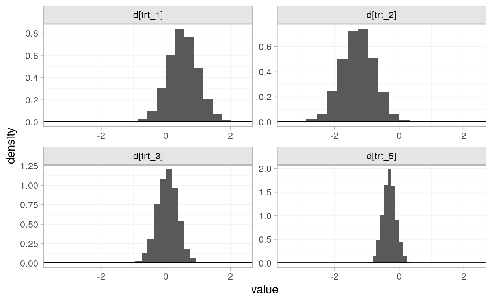
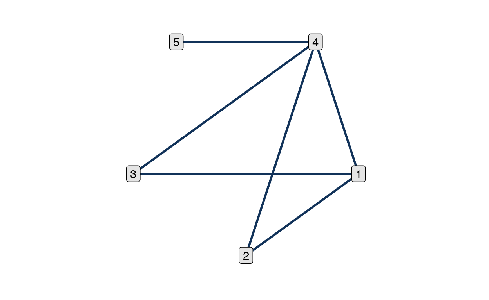
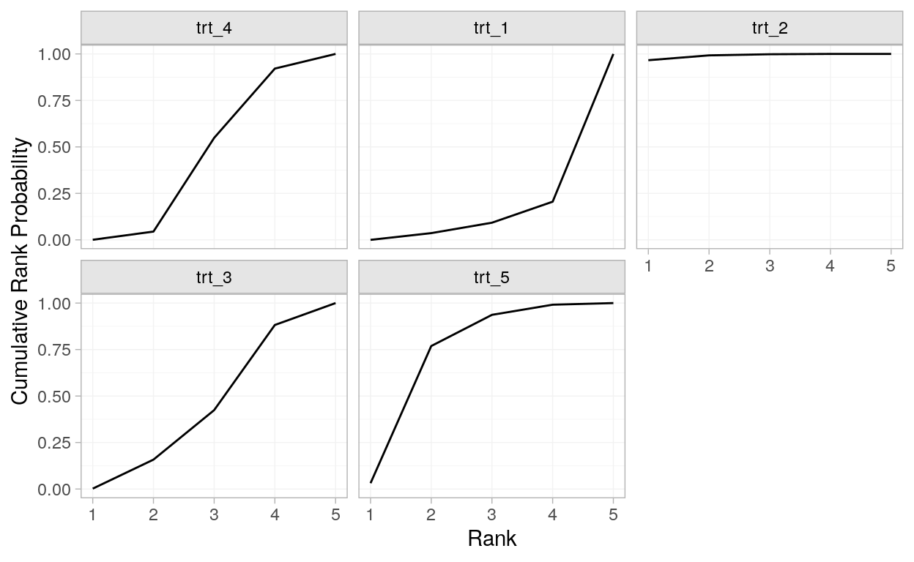
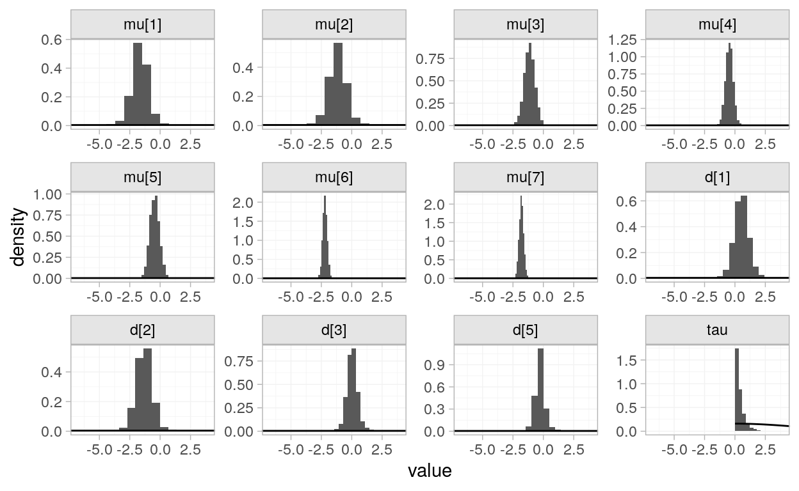

Work in progress.
# last updated
Sys.Date()
[1] "2020-10-07"
# packages used in this blogpost
# general purpose
library(tidyverse)
library(kableExtra) # tables
library(skimr) # summary
library(patchwork) # vis + vis
# toolchain walkthrough
library(multinma) # network meta-analysis
library(nmathresh) # threshold analysis
library(metafor) # for (non network) meta-analysis
# special purpose
library(fdrtool) # for halfnormal distribution
library(simeta) # borrowing some handy functions
# note: should port these to my helper functions pkg
# for reproducibility
set.seed(40)Network meta-analysis is a statistical method for aggregating multiple pairwise comparisons on a response of interest (Higgins et al. 2019). For example, perhaps three studies propose different treatments for a particular medical condition, network meta-analysis enables us to directly and indirectly compare the treatments’ effects. Network meta-analysis is a technique for identifying which treatments are more effective than others, rather than whether a treatment is effective (Harrer et al. 2019).
In this toolchain walkthrough, an opinionated documentation of a scientific workflow (Gray 2019), I computationally step through the packages multinma:: (Phillippo 2020) and nnathresh (Phillippo et al. 2018) for a network meta-analysis with threshold analysis.
Bayesian network meta-analysis is a form of meta-analysis, and meta-analysis is form of linear regression. We solve for a line of best fit. How do we describe this particular line?
\[ y \sim \text{normal}(BX, \sigma^2) \]
For the \(k\)th study’s effect, for a random effects model, we assume
\[ y_k \sim \text{normal}(\mu + u_k, \sigma_k^2)\\ u_k \sim \text{normal}(0, \tau^2) \]
where \(\mu\) represents the effect of interest and \(u_k\) the heterogeneity of the studies, with spread \(\tau^2\).
A network meta-analysis relies on a transitivity assumption whereby indirect comparisons can be constructed from direct comparisons. That is, if we have direct comparisons \(\delta_{AC}\) and \(\delta_{CB}\), we can construct an indirect comparison of differences (Lumley 2002). \[ \delta_{AB} = \delta_{AC} + \delta_{CB} \]
Using this, analogously to \(BX\) a coefficients are found for all treatment effects, relative to a control or placebo.
Lumley characterises the structure of the model for three treatments (Lumley 2002). For the \(k\)th study’s treatments \(i\) and \(j\), measured by \(Y_{ijk}\), true average effects \(\mu\) and \(\eta\) capturing the heterogeneity of the treatment effect, with \(\zeta\) denoting a change in the effect of treatment \(i\) when it is compared to \(j\)
\[
Y_{ijk} \sim \text{normal}(\mu_i - \mu_j + \eta_{ik} + \eta_{jk} + \zeta_{ij}, \sigma^2_{ijk})\\
\eta_{ij} \sim \text{normal}(0, \tau^2)\\
\zeta_{ij} \sim \text{normal}(0, \omega^2)
\] This statement lays out the basic structure clearest for me, especially where heterogeneity \(\tau^2\) and incoherence \(\omega\) sit in the structure.
Since multinma:: provides tools for Bayesian network meta-analysis, our computational model solves for the posterior (McElreath 2016), providing the probability of the parameter of interest, \(\theta\), given the data, \(x\), \[
P(\theta|x) = \frac{P(x|\theta)P(\theta)}{P(x)}.
\] We get the distributions of the mean value of the parameters, the non-data bits, of the model.
And, using the nomeclature of the documentation in ::nma_thresh, for a fixed-effect model, we have prior \[
d \sim \text{normal}(d_0, \Sigma_d)\\
\] and likelihood \[
y\ |\ d \sim \text{normal}(\delta, V)\\
\] with fixed effect \[
\delta = Xd
\]
Now to explore this theory in action with an example network meta-analysis.
We’ll use an example dataset from multinma:: with seven studies’ results for pairwise comparisons of five treatments of interest for our continuous response measure,
the mean off-time reduction in patients given dopamine agonists as adjunct therapy in Parkinson’s disease from 7 trials comparing four active drugs and placebo (
?parkinsonsdocumentation; Phillippo et al. 2020; data source Dias et al. 2011).
# peek at the data
parkinsons %>%
head(3)
studyn trtn y se n diff se_diff
1 1 1 -1.22 0.504 54 NA 0.504
2 1 3 -1.53 0.439 95 -0.31 0.668
3 2 1 -0.70 0.282 172 NA 0.282
# just gon' tweak it a li'l so I can keep track of the variables
parkinsons_dat <-
parkinsons %>%
mutate(
studyn = str_c("study_", studyn),
trtn = str_c("trt_", trtn)
)From ?parkinsons documentation, we know we have a study variable studyn, a treatment variable trtn, a measure of effect y, and standard error of the effect, se, sample size n.
First step is to convert the raw data to a network object for contrast analysis.
# create network object
parkinsons_net <-
set_agd_contrast(
parkinsons_dat,
study = studyn,
trt = trtn,
y = diff,
se = se_diff,
sample_size = n
)
# this is a network object
parkinsons_net
A network with 7 AgD studies (contrast-based).
---------------------------------------- AgD studies (contrast-based) ----
Study Treatments
study_1 2: trt_1 | trt_3
study_2 2: trt_1 | trt_2
study_3 3: trt_1 | trt_2 | trt_4
study_4 2: trt_3 | trt_4
study_5 2: trt_3 | trt_4
study_6 2: trt_4 | trt_5
study_7 2: trt_4 | trt_5
Outcome type: continuous
--------------------------------------------------------------------------
Total number of treatments: 5
Total number of studies: 7
Reference treatment is: trt_4
Network is connectedNow we’ve converted our data to a network object, we can inspect the direct and indirect evidence we have. That is which treatments have a pairwise comparison in at least one study.
plot(parkinsons_net, weight_edges = FALSE)Figure 1: This network of 7 studies contains direct and indirect (via transitivity) effects, with respect to treatment 4.
We can see the model will be creating indirect comparisons between treatments such 2 and 3, using the direct evidence in studies that compare 1 and 3, as well as 1 and 2.
We run the following code to fit a random-effects network meta-analysis model.
nma_results <-
nma(parkinsons_net,
trt_effects = "fixed",
prior_trt = normal(scale = 100))We assume a prior distribution on \(k = 1, \dots, 5\) treatment effects \[ d_k \sim \text{normal}(d_4, 100^2) \] Since we assume a likelihood \[ y\ |\ d \sim \text{normal}(\delta, V)\\ \] with fixed effect \[ \delta = Xd \] our model will give us estimates of \(d\), \(mu\) and \(V\).
When we plot the posteriors and with their priors, we see estimates for the comparative difference of treatments from the placebo, treatment 4.
plot_prior_posterior(nma_results)
We consider two ways of assessing the results of the model, the standards outlined in Cochrane’s Handbook (Higgins et al. 2019) and threshold analysis (Phillippo 2020).
Now, we have the a network meta-anlaysis, we turn to 11.6 of Cochrane handbook for how to inspect the results of the model (Higgins et al. 2019).
For networks that do not have an overabundance of nodes, that is treatments, a plot of the network, as shown in Figure 1 is enough. We can also inspect the network with a table.
parkinsons_net
A network with 7 AgD studies (contrast-based).
---------------------------------------- AgD studies (contrast-based) ----
Study Treatments
study_1 2: trt_1 | trt_3
study_2 2: trt_1 | trt_2
study_3 3: trt_1 | trt_2 | trt_4
study_4 2: trt_3 | trt_4
study_5 2: trt_3 | trt_4
study_6 2: trt_4 | trt_5
study_7 2: trt_4 | trt_5
Outcome type: continuous
--------------------------------------------------------------------------
Total number of treatments: 5
Total number of studies: 7
Reference treatment is: trt_4
Network is connectedAnother way of summarising the evidence base of a network meta-analysis is a contribution matrix, as described in 11.6.3, however I have as yet to find this.
Haven’t found a tool for this. Might need to code one.
The credible intervals for each of the comparative treatment effects is of most interest, which we can inspect with a forest plot.
plot(nma_results)
This would suggest the second treatment has the greatest effect. A table is also a useful summary.
nma_results
A fixed effects NMA with a normal likelihood (identity link).
Inference for Stan model: normal.
4 chains, each with iter=2000; warmup=1000; thin=1;
post-warmup draws per chain=1000, total post-warmup draws=4000.
mean se_mean sd 2.5% 25% 50% 75% 97.5% n_eff Rhat
d[trt_1] 0.53 0.01 0.47 -0.39 0.22 0.53 0.83 1.46 2279 1
d[trt_2] -1.28 0.01 0.51 -2.28 -1.62 -1.27 -0.94 -0.29 2396 1
d[trt_3] 0.05 0.01 0.32 -0.59 -0.17 0.05 0.27 0.68 2688 1
d[trt_5] -0.30 0.00 0.20 -0.69 -0.43 -0.30 -0.16 0.11 3552 1
lp__ -3.09 0.03 1.41 -6.61 -3.79 -2.76 -2.04 -1.36 1807 1
Samples were drawn using NUTS(diag_e) at Wed Oct 7 20:56:12 2020.
For each parameter, n_eff is a crude measure of effective sample size,
and Rhat is the potential scale reduction factor on split chains (at
convergence, Rhat=1).Another recommendation is to provide the ranking distributions of the different treatments.
posterior_rank_probs(nma_results) %>%
plot()
A nice feature of multinma:: is that it provides cumulative ranking plots, which I think are bit easier to interpret. Here we see the second treatment has the greatest likelihood to be ranked the best treatment.
posterior_rank_probs(nma_results, cumulative = TRUE) %>%
plot()
Work in progress.
Phillipo et al. claim threshold analysis provides a more robust method of assessing confidence in recommendations based on network meta-analysis than the widely-used [] GRADE framework (Phillippo et al. 2019). The typical results of a network meta-analysis is a ‘consistent set of treatment estimates so that coherent recommendations may be made’, however there are many reasons we may question the strength of the evidence. In the case of the parkinsons_dat dataset, we have an estimate of the laudifference of a particular treatment on the mean off-time reduction in patients given dopamine agonists as adjunct therapy, from the default treatment.
Threshold analysis quantifies precisely how much the evidence could change (for any reason, such as potential biases or simply sampling variation) before the recommendation changes, and what the revised recommendation would be. If it is judged that the evidence could not plausibly change by more than this amount then the recommendation is considered robust, otherwise the recommendation is sensitive to plausible changes in the evidence (Phillippo et al. 2019).
Threshold analyses are performed at both study level and at contrast level, in either case the result is a set of thresholds that show how much the data point can change before the recommendation changes. We will do a contrast-level threshold analysis on the parkinsons_dat dataset.
::nma_thresh for random effects model require
means.dk of the basic treatment parameters \(d_k\),
post_means <-
summary(nma_results, pars=c("d")) %>%
as.data.frame() %>%
pull("mean")lhood covariance matrix,
# for lhood
likelihood_cov <-
diag(parkinsons_dat$se^2)post, posterior covariance mtrix of the vector \((\delta^T, \sigma^T, \mu^T)^T\)
# for posterior
post_cov <-
summary(nma_results, pars = c("d")) %>%
as.data.frame() %>%
pull("sd") %>%
as.numeric() %>%
map_dbl(.f = function(x){x^2}) %>%
diag()mu.design for additional covariates,
# a design matrix for mu.design
M <- matrix(0, nrow = nrow(parkinsons_dat), ncol = 7)
for (i in 1:nrow(parkinsons_dat)) {
if (parkinsons_dat$trtn[i]) M[i, parkinsons_dat$studyn[i]] <- 1
}delta.design for random effects terms.
# construct the design mtrix for eazch contrast
X <- matrix(0, nrow = 15, ncol = 6)
for (i in 1:15){
X[i, parkinsons_dat$trtn[i]-1] <- 1
if (parkinsons_dat$studyn[i] != 4){
X[i, parkinsons_dat$studyn[i]-1] <- -1
}
}With these inputs, we construct a threshold object.
# unfortunately this code throws an error
# indicating the construction of the posterior covariance matrix is not correct
thresh <-
nma_thresh(
mean.dk = post_means,
lhood = likelihood_cov,
post= post_cov,
X = X,
nmatype = "fixed"
)
Error in nma_thresh(mean.dk = post_means, lhood = likelihood_cov, post = post_cov, : object 'X' not foundIt will take some more study to figure out how to do a threshold analysis. So, I’ll toolchain walkthrough, an opinionated documentation of a scientific workflow (Gray 2019), through the vignette for threshold analysis, and try to connect it to the structure of the model as mathematical objects. Already I can see the dimensions of the matrices I constructed are not correct.
::nma_threshPrior:
\[ d \sim N(d_0, \Sigma_d) \] Likelihood: \[ y | d \sim N(\delta, V) \] FE model: \[ \delta = Xd + M\mu \] Which components of these do we need for the threshold analysis?
means.dk of the basic treatment parameters \(d_k\)So that would be the \(d\) in \(\delta = Xd + M\mu\)?
nmathresh:: example: social anxietyIn this section, I toolchain walkthrough through the code provided as an example in Phillipo et al.’s threshold analysis manuscript (Phillippo et al. 2019).
The data provided are from a network meta-analysis of social anxiety with 41 treatments in 17 classes over 100 studies.
means.dk of the basic treatment parameters \(d_k\),Dias, Sofia, Nicky J Welton, Alex J Sutton, and AE Ades. 2011. “NICE Dsu Technical Support Document 2: A Generalised Linear Modelling Framework for Pairwise and Network Meta-Analysis of Randomised Controlled Trials.”
Gray, Charles T. 2019. “Code::Proof: Prepare for Most Weather Conditions.” Edited by Hien Nguyen. Statistics and Data Science, Communications in Computer and Information Science,, 22–41. https://doi.org/10.1007/978-981-15-1960-4_2.
Harrer, Mathias, Prof Dr Pim Cuijpers², Prof Dr Toshi A. Furukawa³, and Assoc Prof Dr David D. Ebert². 2019. Doing Meta-Analysis in R. https://bookdown.org/MathiasHarrer/Doing_Meta_Analysis_in_R/.
Higgins, Julian PT, James Thomas, Jacqueline Chandler, Miranda Cumpston, Tianjing Li, Matthew J Page, and Vivian A Welch. 2019. Cochrane Handbook for Systematic Reviews of Interventions. John Wiley & Sons.
Lumley, Thomas. 2002. “Network Meta-Analysis for Indirect Treatment Comparisons.” Statistics in Medicine 21 (16): 2313–24. https://doi.org/10.1002/sim.1201.
McElreath, Richard. 2016. Statistical Rethinking: A Bayesian Course with Examples in R and Stan. CRC Press. http://xcelab.net/rm/statistical-rethinking/.
Phillippo, David M. 2020. Multinma: Network Meta-Analysis of Individual and Aggregate Data in Stan. Manual. https://doi.org/10.5281/zenodo.3904454.
Phillippo, David M., Sofia Dias, A. E. Ades, Mark Belger, Alan Brnabic, Alexander Schacht, Daniel Saure, Zbigniew Kadziola, and Nicky J. Welton. 2020. “Multilevel Network Meta-Regression for Population-Adjusted Treatment Comparisons.” Journal of the Royal Statistical Society: Series A (Statistics in Society) 183 (3): 1189–1210. https://doi.org/10.1111/rssa.12579.
Phillippo, David M., Sofia Dias, A. E. Ades, Vanessa Didelez, and Nicky J. Welton. 2018. “Sensitivity of Treatment Recommendations to Bias in Network Meta‐analysis.” Journal of the Royal Statistical Society: Series A (Statistics in Society) 181 (3): 843–67. https://doi.org/10.1111/rssa.12341.
Phillippo, David M., Sofia Dias, Nicky J. Welton, Deborah M. Caldwell, Nichole Taske, and A.e. Ades. 2019. “Threshold Analysis as an Alternative to GRADE for Assessing Confidence in Guideline Recommendations Based on Network Meta-Analyses.” Annals of Internal Medicine 170 (8): 538–46. https://doi.org/10.7326/M18-3542.